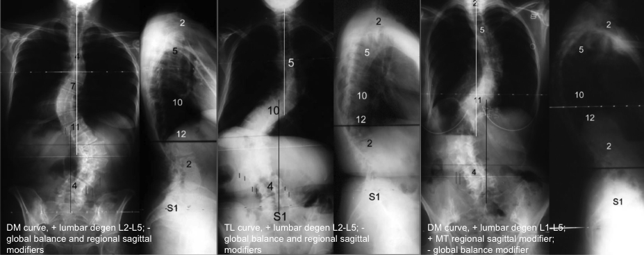

Adapted from: Lowe T, Berven SH, Schwab FJ, Bridwell KH. The SRS classification for adult spinal deformity: building on the King/Moe and Lenke classification systems. Spine (Phila Pa 1976). 2006 Sep 1;31(19 Suppl):S119-25. doi: 10.1097/01.brs.0000232709.48446.be.
1) Description of Measurement
The SRS-Sagittal Deformity Classification was developed by the Scoliosis Research Society Adult Spinal Deformity Committee to provide a reliable radiographic taxonomy for adult spinal deformity (ASD) that incorporates not only coronal curve patterns but also regional sagittal malalignment, lumbar degenerative pathology, and global balance.
The system includes:
This framework was the direct conceptual precursor to the modern SRS-Schwab classification, emphasizing the importance of sagittal alignment and degenerative features in adult deformity.
2) Instructions to Measure
Obtain standing long-cassette AP and lateral full-length radiographs
Six Major curve patterns:
SRS Definitions of Regions
Criteria for major curves
Measure sagittal Cobb angles on lateral films:
Apply if radiographic evidence of:
3) Normal vs. Pathologic Ranges
4) Important References
Lowe T, Berven SH, Schwab FJ, Bridwell KH. The SRS classification for adult spinal deformity: building on the King/Moe and Lenke classification systems. Spine (Phila Pa 1976). 2006 Sep 1;31(19 Suppl):S119-25. doi: 10.1097/01.brs.0000232709.48446.be.
Glassman SD, Berven S, Bridwell K, Horton W, Dimar JR. Correlation of radiographic parameters and clinical symptoms in adult scoliosis. Spine (Phila Pa 1976). 2005 Mar 15;30(6):682-8. doi: 10.1097/01.brs.0000155425.04536.f7.
Schwab FJ, Smith VA, Biserni M, Gamez L, Farcy JP, Pagala M. Adult scoliosis: a quantitative radiographic and clinical analysis. Spine (Phila Pa 1976). 2002 Feb 15;27(4):387-92. doi: 10.1097/00007632-200202150-00012.
5) Other info....
The SRS-Sagittal Deformity Classification system highlights that adult deformity is dominated:
This classification directly influenced development of the SRS-Schwab system, which later incorporated pelvic parameters (PI–LL mismatch, SVA, PT) for stronger correlation with disability and outcomes.